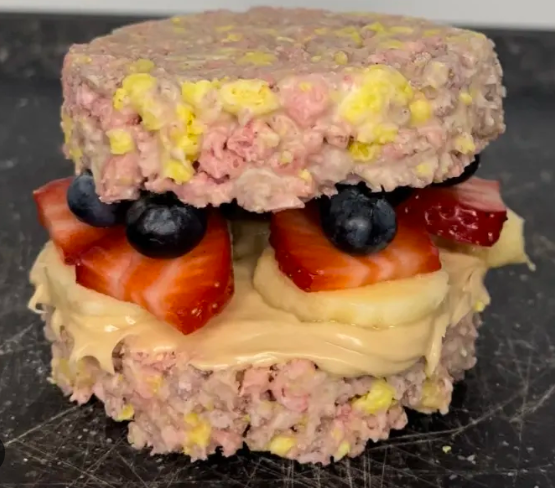

Froot Loops Sandwich

What is a Froot Loops Sandwich You May Ask??
Froot Loops Sandwich is a very light and heavy and a very refreshing sandwich. It definitely is a dish that will knock your socks off. It mainly consists of Froot Loops Cereal, Hazelnut Spread, White Chocolate, and lots of Diabetes.
Ingredients you will need to make your Froot Loops Sandwich..
- 80 grams of Froot Loops Cereal
- 20 grams of hazelnut spread
- 2 strawberries, no mold on them please...
- 100 grams of White Chocolate
- 0.25 serving of banana
- 20 grams of blueberries
- Your nearest Emergency Hospital (in case it's too much)
- and you of course to make it.
The secret instructions to making the best Froot Loops Sandwich
- Crumble the Froot Loops.
- Cut the chocolate into small pieces and melt it in the microwave.
- Pour the chocolate over the Froot Loops and mix until well combined.
- Place a stainless steel ring on a piece of baking paper. Pour half of the Froot Loops mixture into the ring and press down well with a spoon of glass.
- Repeat this step again. Then put the rings in the freezer for 10-15 minutes.
- Meanwhile, cut the banana and strawberries into thick pieces.
- Slowly, loosen the molds with a stick.
- Place the banana, strawberries, and blueberries on top.
- Stack the second half on top.
- Finally, pour more diabetes on top of your sandwich and enjoy.